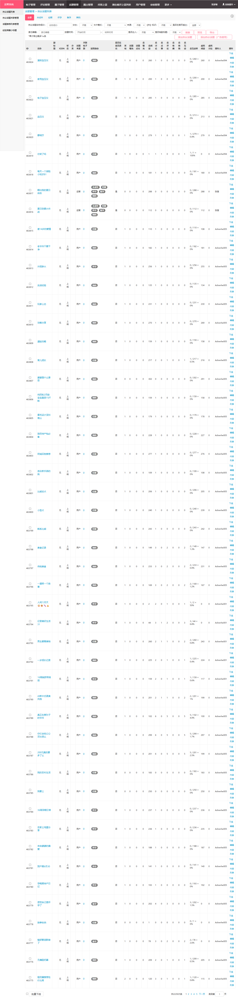
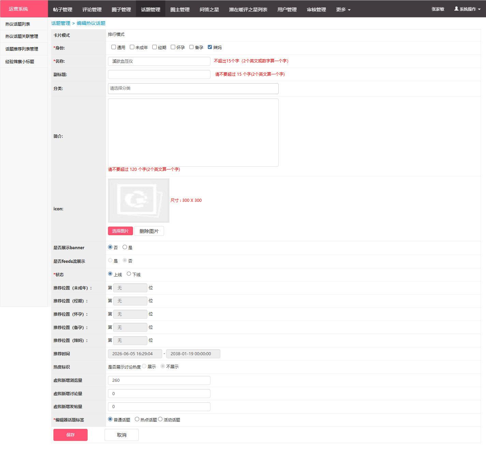

本次调研围绕美柚话题管理后台的升级需求展开，分析当前系统的能力短板与竞品的最佳实践，为后续产品迭代提供决策依据。
运营侧频繁反馈话题管理效率低、缺少数据分析能力，期望后台支持话题生命周期管理、数据看板与智能化运营工具。
当前后台话题管理功能较为基础，缺乏话题层级结构、批量操作、权限控制等中后台标配能力，运营人效有待提升。
结合行业竞品（小红书、知乎、微博等）的后台管理实践，对标补齐美柚话题管理的能力短板，构建差异化竞争力。
| 维度 | ✅ 涵盖 | ❌ 不涵盖 |
|---|---|---|
| 功能范围 | 话题创建/编辑/审核/上下线、分类管理、内容管理、数据统计、批量操作、权限管理 | 社区 C 端话题页交互设计、推荐算法策略、广告变现 |
| 竞品范围 | 小红书、知乎、微博、抖音、B站、宝宝树、妈妈网 | 海外社区产品（Reddit、Quora）、纯工具类 SaaS |
| 分析深度 | 功能层面对比分析、竞品亮点提炼、四维深度评估 | 技术架构选型、详细交互原型、数据库设计 |
基于美柚当前后台 admin.seeyouyima.com/topic/subject_list 的实际使用情况，识别出以下核心问题：


| 模块 | 问题描述 | 问题类型 | 业务影响 | 严重程度 |
|---|---|---|---|---|
| 话题结构 | 无父级/子级话题层级关系，所有话题平铺展示，8,000+ 话题管理混乱 | 功能缺失 | 运营无法对相关话题归类，用户侧话题聚合困难 | 高 |
| 数据看板 | 无话题维度数据分析能力，无法查看话题热度趋势、转化漏斗、用户留存等关键指标 | 数据缺失 | 运营决策缺乏数据支撑，话题运营效果无法量化评估 | 高 |
| 批量操作 | 无批量上下线、批量修改分类/属性、批量导出等功能 | 效率问题 | 面对大量话题调整需求时只能逐条操作，效率极低 | 高 |
| 权限管控 | 无细粒度角色权限，所有后台用户可对任意话题进行操作 | 功能缺失 | 存在误操作风险，无法实现不同运营角色的职责隔离 | 中 |
| 搜索筛选 | 仅支持关键词搜索和状态筛选，缺少按创建人、时间范围、人群标签等多维筛选 | 体验问题 | 话题量增长后查找效率下降，运营体验不佳 | 中 |
| 内容管理 | 话题下的内容列表可查看但无法批量管理，无法置顶/加精/屏蔽内容 | 功能缺失 | 话题内容质量管控能力弱，UGC 噪音无法有效治理 | 中 |
⚠ 当前美柚具备基础的话题 CRUD 能力 + 人群标签筛选（经期/怀孕/备孕/辣妈/未成年），这是母婴赛道的差异化优势，但整体仍处于后台工具 1.0 阶段。
| 用户故事 | 功能列表 | 优先级 |
|---|---|---|
| 作为话题运营，我希望建立父话题-子话题层级结构，以便对8000+话题进行有序归类和管理 |
|
P0 |
| 作为运营负责人，我希望查看话题数据看板，以便评估每个话题的运营效果和 ROI |
|
P0 |
| 作为话题运营，我希望支持批量操作，以便高效处理大量话题的上下线和属性修改 |
|
P0 |
| 作为管理员，我希望设置细粒度角色权限，以便不同运营人员各司其职，降低误操作风险 |
|
P1 |
| 作为内容运营，我希望在话题维度管理内容质量，以便提升话题的内容健康度 |
|
P1 |
| 作为运营负责人，我希望有话题运营日历和智能推荐，以便规划话题排期和提高话题创建效率 |
|
P2 |
美柚话题管理当前处于"功能可用但不高效"的阶段——基础 CRUD 和 人群标签筛选是差异化优势，但在话题层级、数据看板、批量操作三道硬坎上明显落后。P0 优先补齐结构化管理和数据驱动能力，P1 建设权限和内容治理体系，P2 引入智能化运营工具，对标知乎的层级体系 + 小红书的数据看板 + 微博的角色分权，形成美柚特色的话题管理能力闭环。
📌 说明：中后台管理系统均为竞品公司内部工具，不对外公开，无法获取实际后台截图。以下分析基于竞品 C 端功能反推其后台能力 + 行业通用实践推断。能力等级仅代表后台对该维度的支持程度。
| 功能维度 | 美柚当前 | 小红书 | 知乎 | 微博 | 抖音 | 宝宝树 | 妈妈网 |
|---|---|---|---|---|---|---|---|
| 话题 CRUD | 中基本增删改查，含人群标签配置 | 强支持富文本话题页配置、SEO 元数据 | 强父子级话题树、话题合并/拆分 | 强超话社区完整配置、主持人管理 | 强话题模板化创建、AI 辅助生成 | 弱基础话题管理，功能较简单 | 弱基础话题管理，功能较简单 |
| 话题层级结构 | 弱无层级关系，全部平铺 | 中话题标签体系，支持二级分类 | 强完整父子话题树，支持多级嵌套 | 中超话分类体系，按领域归类 | 中挑战赛/话题标签体系 | 弱简单分类，无层级 | 弱简单分类，无层级 |
| 数据看板 | 弱无独立数据看板 | 强话题热度趋势、参与用户画像、内容分析 | 强话题活跃度、内容质量分、用户贡献榜 | 强超话热度指数、粉丝增长、互动趋势 | 强话题播放量、参与人数、地域分布 | 弱基础 PV/UV 统计 | 弱基础 PV/UV 统计 |
| 批量操作 | 弱不支持批量操作 | 中批量话题标签管理、批量内容审核 | 中批量合并/移动话题 | 中批量话题推荐位调整 | 中批量内容审核、话题关联 | 弱基本无批量能力 | 弱基本无批量能力 |
| 权限/角色管理 | 弱无角色权限体系 | 强多角色分权，按话题/模块授权 | 中编辑/管理员分级，话题归属管理 | 强超话主持人、社区委员、普通成员 | 中运营角色分级，按业务线授权 | 弱单一管理员角色 | 弱单一管理员角色 |
| 审核/审批流程 | 弱无审核流程，直接上线 | 强机审+人审双通道，敏感词过滤 | 中话题创建需审核，有内容审核流 | 中超话创建申请审批，敏感话题拦截 | 强AI 预审+人工复审，实时拦截 | 弱后置审核为主 | 弱后置审核为主 |
| 内容管理 | 中可查看话题下内容列表 | 强内容精选/置顶/隐藏/排序、敏感内容过滤 | 强内容折叠/推荐/加精、内容质量评分 | 中内容筛选、违规处理 | 强智能推荐排序、内容去重、版权保护 | 弱基础内容列表查看 | 弱基础内容列表查看 |
| 操作日志/审计 | 弱无操作日志 | 中关键操作留痕，支持回溯 | 中话题编辑日志、内容变更记录 | 中主持人和运营操作日志 | 中运营操作记录，可按人追溯 | 弱无系统日志 | 弱无系统日志 |
| 话题运营工具 | 弱仅首页推荐位配置 | 强话题挑战赛、话题红包、话题联名 | 强圆桌讨论、话题日报、优秀回答者 | 强超话签到、打榜、粉丝群、空降 | 强挑战赛工具、特效道具、明星联动 | 弱基础推荐位管理 | 弱基础推荐位管理 |
| 竞品 | 亮点功能 | 对美柚的借鉴价值 |
|---|---|---|
| 知乎 | 父子话题树 + 话题合并/拆分机制，支持多层级话题归类 | 美柚可引入"父话题-子话题"结构，解决 8,000+ 话题管理混乱问题，如"孕期→孕期饮食/孕期运动/孕期检查" |
| 小红书 | 话题数据看板 + 话题挑战赛工具，运营可追踪话题热度趋势 | 构建话题数据仪表盘（参与人数/内容量/互动率/人群分布），为运营决策提供量化依据 |
| 微博 | 超话多角色分权（主持人/小主持人/社区委员），社区自治+官方管控 | 设计美柚话题管理角色体系：超级管理员/话题运营/内容审核，实现按模块/按话题的权限分配 |
| 抖音 | AI 辅助话题创建（根据热点/关键词自动生成话题）+ 智能审核流 | 引入 AI 话题推荐（根据美柚社区热点/用户搜索词推荐话题）减轻运营创建压力 |
| B站 | 话题广场 + 话题活动日历，可视化展示话题运营节奏 | 构建美柚话题运营日历，按人群（经期/孕期/辣妈）规划话题排期，避免话题冲突和空档 |
📌 评估基于 C 端功能反推 + 行业公开信息推断，实际后台能力可能有差异。
| 评估项 | 美柚当前 | 小红书 | 知乎 | 微博 | 抖音 |
|---|---|---|---|---|---|
| 功能完备性 | 中基础 CRUD + 人群标签，缺少层级、审核、数据 | 强话题全生命周期管理，运营工具丰富 | 强父子话题体系成熟，知识结构化能力强 | 强超话体系完善，社区自治机制成熟 | 强AI 加持，话题创建与管理效率高 |
| 配置灵活性 | 中支持人群标签、推荐位、卡片样式配置 | 强话题页模块化配置，SEO 元数据自定义 | 中话题属性配置完善，但页面模板固定 | 强超话皮肤/头图/规则高度自定义 | 中话题模板标准化，可配置项有限 |
| 权限粒度 | 弱无角色权限体系 | 强多角色按模块/话题授权 | 中编辑/管理员两级，话题归属管理 | 强主持人→委员→成员三级体系 | 中运营按业务线分权 |
| 评估项 | 美柚当前 | 小红书 | 知乎 | 微博 | 抖音 |
|---|---|---|---|---|---|
| 操作效率 | 弱无批量操作，逐条管理效率低 | 强批量操作 + 快捷键 + 智能推荐 | 中有批量能力但入口较深 | 中超话管理工具较多但分散 | 强AI 自动化降低人工操作量 |
| 信息架构 | 中平铺列表 + 筛选，信息层级浅 | 强树形分类 + 标签体系，导航清晰 | 强话题父子树信息架构，层级分明 | 中超话分类合理，但入口分散 | 强搜索+推荐，信息查找高效 |
| 视觉一致性 | 中基础后台风格，视觉统一但简陋 | 强品牌色系统一，组件规范 | 强简洁清晰的后台设计语言 | 中功能丰富但视觉偏老旧 | 强简洁现代的 Bytedance 设计中台 |
| 评估项 | 美柚当前 | 小红书 | 知乎 | 微博 | 抖音 |
|---|---|---|---|---|---|
| 数据看板 | 弱无话题独立数据看板 | 强话题级数据分析，含用户画像和趋势 | 强活跃度/质量分/贡献榜多维分析 | 强超话热度指数 + 粉丝增长趋势 | 强话题播放量、地域分布、受众画像 |
| 运营工具 | 弱仅首页推荐位配置 | 强话题挑战赛/红包/联名活动工具 | 强圆桌讨论/日报/优秀回答者体系 | 强超话签到/打榜/粉丝群/明星空降 | 强挑战赛模板/特效道具/明星联动 |
| 审批流程 | 弱无审批流程 | 强机审+人审双通道 | 中话题创建需审核 | 中超话创建申请审批 | 强AI 预审+人工复审 |
| 评估项 | 美柚当前 | 小红书 | 知乎 | 微博 | 抖音 |
|---|---|---|---|---|---|
| 开放能力 | 弱无开放 API | 强开放平台提供话题相关 API | 中部分话题数据可对外输出 | 强超话数据接入微博开放平台 | 强抖音开放平台提供话题数据接口 |
| 上下游集成 | 弱独立后台，无系统间集成 | 强话题与电商/广告/品牌合作打通 | 中话题与盐选/电子书有联动 | 强超话与热搜/话题榜/明星主页联动 | 强话题与电商/品牌挑战赛/广告打通 |
| 扩展性 | 中支持人群标签扩展，架构可扩展 | 强话题与笔记/商品/品牌多场景融合 | 强话题知识图谱，可支撑搜索/推荐 | 中超话体系相对封闭 | 强话题可作为广告/电商入口 |
四维评估显示美柚在运营维度和生态维度差距最大——无数据看板、无运营工具、无开放能力。短期应聚焦能力维度补齐（话题层级+数据看板），中期建设运营工具链（话题日历+人群定向话题推荐），长期考虑话题生态打通（与美柚电商/工具/知识付费联动）。美柚独有的人群标签体系是构建差异化运营工具的天然优势。
美柚话题管理后台当前处于"基础可用、效率不足、数据缺失"阶段。对比7家竞品后发现：头部平台（小红书/知乎/微博/抖音）已构建完整的话题层级体系+数据看板+运营工具能力闭环，而同赛道的母婴社区（宝宝树/妈妈网）同样薄弱，美柚有机会在此建立差异化优势。
⚠ 关键判断：美柚的人群标签体系（经期/怀孕/备孕/辣妈/未成年）是竞品不具备的独特资产，应作为所有优化工作的核心主线——数据看板按人群维度拆解、话题推荐按人群画像定向、运营工具按人群生命周期设计。
| 阶段 | 时间 | 优化重点 | 预期收益 |
|---|---|---|---|
| P0 | 近期（1-2月） |
|
运营管理效率提升50%+；话题效果可量化评估 |
| P1 | 中期（2-4月） |
|
误操作风险降低；内容质量可控；操作可追溯 |
| P2 | 远期（4-6月） |
|
话题运营从人工走向智能化；形成美柚特色话题生态 |
| 美柚优势 | 差异化方向 | 竞品现状 |
|---|---|---|
| 人群标签体系 | 按人群维度（经期/孕期/备孕/辣妈）拆分话题数据看板，运营可精准评估各人群话题健康度 | 无竞品具备此能力 |
| 女性生命周期 | 话题按用户生命周期阶段自动推荐，如备孕期→孕期→育儿期话题无缝衔接 | 竞品按通用兴趣推荐，无生命周期视角 |
| 母婴垂直深耕 | 构建"备孕→孕期→产后→育儿"话题知识树，形成结构化内容资产 | 知乎有话题树但非母婴垂直；宝宝树有垂直但无结构化 |
美柚话题管理的升级路径不是简单追赶竞品，而是以人群标签体系为轴心，构建差异化的话题管理能力。P0打好地基（层级+数据+效率），P1建好护栏（权限+内容+审计），P2做出特色（日历+AI+生态）。最终目标是形成"人群视角的话题运营闭环"——这是小红书、知乎等通用平台无法复制的母婴赛道壁垒。